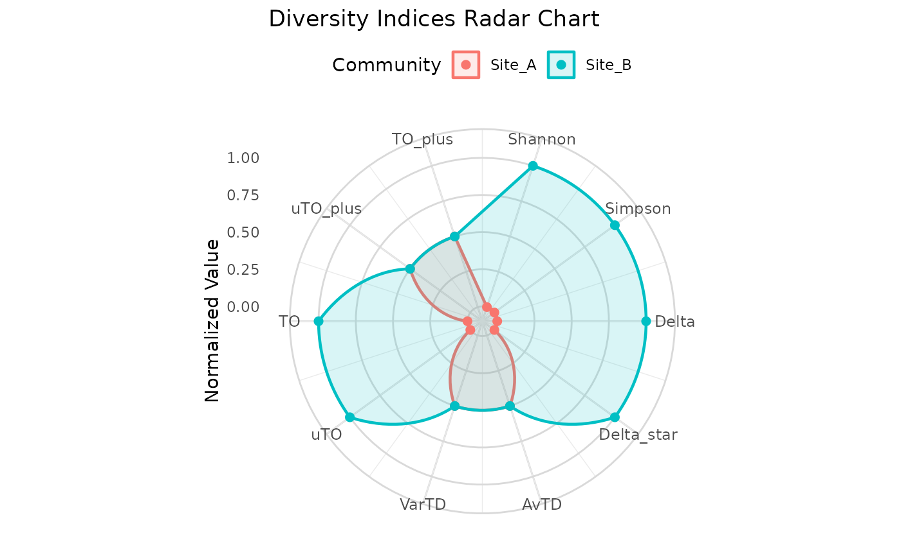

Creates a radar chart comparing diversity indices across multiple communities. Each axis represents a different index, and each community is drawn as a colored polygon. Values are normalized to 0-1 scale so that indices with different magnitudes can be compared visually.
Arguments
- communities
A named list of community vectors (named numeric).
- tax_tree
A data frame representing the taxonomic hierarchy, as produced by
build_tax_tree.- indices
Character vector specifying which indices to include. Default is all 10 indices. Available:
"Shannon","Simpson","Delta","Delta_star","AvTD","VarTD","uTO","TO","uTO_plus","TO_plus".- title
Optional character string for the plot title.
Details
Each index value is normalized using min-max scaling across the communities being compared:
$$x_{norm} = \frac{x - x_{min}}{x_{max} - x_{min}}$$
If all communities have the same value for an index (i.e., \(x_{max} = x_{min}\)), the normalized value is set to 0.5.
The radar chart is built using polar coordinates in ggplot2. Each community appears as a colored polygon overlay, making it easy to spot which community scores higher on which indices.
See also
compare_indices for tabular comparison
Examples
# \donttest{
tax <- build_tax_tree(
species = c("sp1", "sp2", "sp3", "sp4"),
Genus = c("G1", "G1", "G2", "G2"),
Family = c("F1", "F1", "F1", "F2")
)
comms <- list(
Site_A = c(sp1 = 10, sp2 = 20, sp3 = 15, sp4 = 5),
Site_B = c(sp1 = 5, sp2 = 5, sp3 = 5, sp4 = 5)
)
plot_radar(comms, tax)
#> Warning: Removed 2 rows containing missing values or values outside the scale range
#> (`geom_point()`).

# }